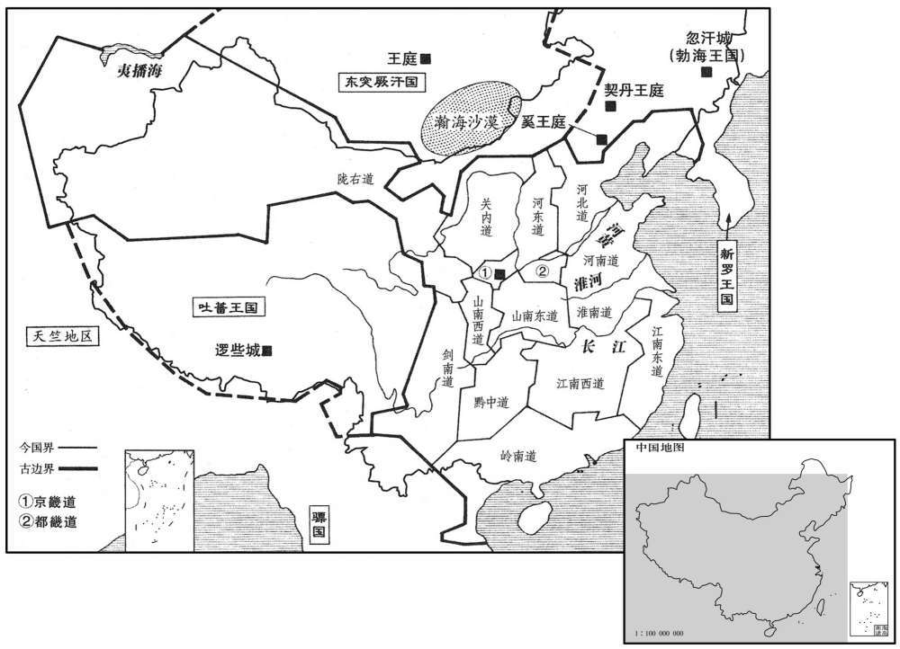
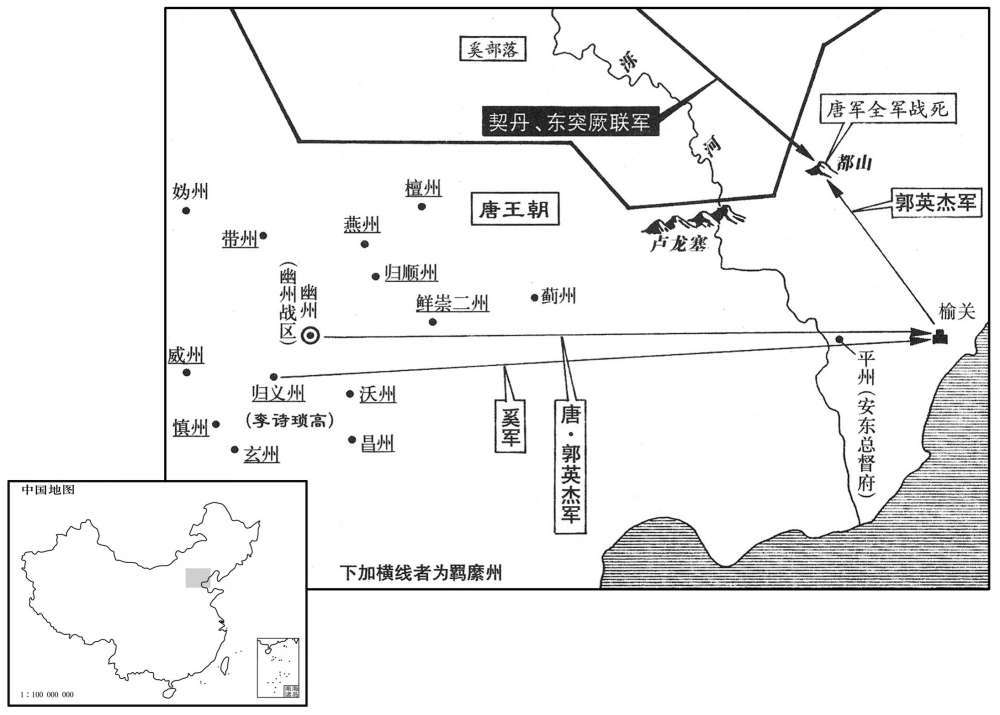

公元733年资治通鉴：本年记事、原文与白话对照
按原书编年位置阅读；追叙和史论不等于本年发生的事件。白话采用所据译本，缺译不以生成译文补齐。
卷213 · 本年记事
公元733年 · 唐玄宗至道大圣大明孝皇帝开二十一年
二十一年〔(癸酉,七三三)〕
上传原文的注释括号有异常，字符原样保留；无法可靠划分的段落默认全文显示。
本年事件索引（现代整理）

本年形势与背景参考图
春，正月，乙已，祔肃明皇后于太庙，毁仪坤庙。〔肃明留祀仪坤，见二百十一卷四年。〕
春季，正月，乙巳（初六），将睿宗肃明皇后的神主迁入太庙受祭，拆毁了仪坤庙。
丁已，上幸骊山温泉。
两版字句有差异，建议核对原文。
丁巳（十八日），唐玄宗来到骊山温泉。
上遣大门艺诣幽州发兵，以讨勃海王武艺；〔考异曰：新书乌承玼传云：「可突干杀其王邵固，降突厥，而奚亦乱。是岁奚、契丹入寇，诏承玼击之，破于捺禄山。」又云：「勃海大武艺引兵至马都山，屠城邑，承玼窒要路，堑以大石，亘四百里，于是流人得还土少休，脱铠而耕，岁省度支运钱。」按韩愈为乌重胤作庙碑，叙重胤父承洽云：「屡破契丹，从战捺禄，走可突干勃海上，至马都山，吏民逃徙失业。尚书领所部兵塞其道，堑原累石，绵四百里，深高皆三丈。寇不得进，民还其居，岁罢钱三千万。」疑新书约此碑作承玼传。按新、旧帝纪及勃海传皆无武艺入寇至马都山事，或者韩碑云「走可突干勃海上，至马都山」，谓破走可突干勃海上，追之至马都山耳。二十一年，郭英杰与可突干战都山。然则都山盖契丹之也。吏民逃徙失业，盖因可突天入寇而然，与上止是一事，新书承之致误。然未知新书承玼传中余事，别据何书。〕庚申，命太仆员外卿金思兰使于新罗，〔思兰，新罗王之侍子，留京师，官为太仆卿，员外置。〕发兵击其南鄙。会大雪丈余，山路阻隘，士卒死者过半，无功而还。武艺怨门艺不已，密遣客刺门艺于天津桥南，不死；上命河南搜捕贼党，尽杀之。〔河南，谓河南府。刺，七亦翻。〕
唐玄宗派大门艺到幽州去调集军队，以讨伐勃海王大武艺；庚申（二十一日），命令太仆员外卿金思兰出使新罗，请新罗派兵进攻勃海的南部边境。正碰上大雪下了一丈多深，使山路阻塞，半数以上的士兵冻死，故此行无功而返。大武艺十分怨恨大门艺，秘密派刺客在洛阳天津桥南暗杀大门艺，但大门艺没有死；唐玄宗命令河南府搜捕大武艺派来的刺客，把他们全部杀死。
二月，丁酉，金城公立请立碑于赤岭以分唐与吐蕃之境，许之。〔为后绝吐蕃和亲、仆赤岭碑张本。
两版字句有差异，建议核对原文。
二月，丁酉（二十九日），金城公主请求在赤岭建碑，作为唐帝国与吐蕃边境的分界线。唐玄宗同意了她的要求。
三月，乙已，侍中裴光庭薨。太常博士孙琬议：「光庭用循资格，失劝奖之道，请谥曰克。」其子稹讼之，〔稹，止忍翻。〕上赐谥忠献。
三月，乙巳（初七），侍中裴光庭去世。太常博士孙琬议论说：“裴光庭按照年资用人，不能勉励人才上进，请将他谥为‘克’。”裴光庭的儿子裴稹力争，唐玄宗将裴光庭谥为“忠献”。
上问萧嵩可以代光庭者，嵩与右散骑常侍王丘善，将荐之；〔【章：十二行「本」之下「有丘闻之」三字；乙十一行本同；孔本同；张校同；退斋校同；】〕固让于右丞韩休。嵩言休于上。〔萧嵩既能用王丘之言而荐韩休，使能与之和衷，则丘之善乃嵩之善也。〕甲寅，以休为黄门侍郎、同平章事。
唐玄宗向萧嵩询问可以代替裴光庭为相的人，萧嵩和右散骑常侍王丘很要好，想举荐他；王丘坚持要让给尚书右丞韩休。于是，萧嵩向唐玄宗推荐韩休。甲寅（十六日），唐玄宗任命韩休为黄门侍郎、同平章事。
休为人峭直，〔峭，七肖翻，峻也〕不干荣利；及为相，甚允时望。始，嵩以休恬和，谓其易制，〔易，以豉翻。〕故引之。及与共事，休守正不阿，嵩渐恶之。宋璟叹曰：「不意韩休乃能如是！」上或宫中宴乐及后苑游猎，小有过差，辄谓左右曰：「韩休知否﹖」言终，谏疏已至。上尝临镜默默不乐，左右曰：」韩休为相，陛下殊瘦于旧，何不逐之！」上叹曰：「吾貌虽瘦，天下必肥。萧嵩奏事常顺指，既退，吾寝不安。韩休常力争，既退，吾寝乃安。吾用韩休，为社稷耳，非为身也。」〔恶，乌路翻。乐，音洛。为，于伪翻。明皇之待韩休如此，而不能久任之，何也﹖〕
韩休为人严峻正直，不追求名位利禄；等他当了宰相，很符合当时朝廷上下的期望。开始，萧嵩因为韩休恬淡平和，认为他容易控制，所以引荐了他。等到与他共事时，才发现韩休刚正不阿，于是渐渐就厌恶他了。宋叹道：“没想到韩休竟能做到这样！”唐玄宗有时在宫中设宴行乐或到后苑游玩打猎，稍有过失，就问左右的人：“这事韩休知道不知道？”话音刚落，韩休的劝谏书已经送到。唐玄宗曾经对着镜子默默不乐，旁边的人说：“韩休当宰相以来，您比以前瘦多了，为什么不将他斥退？”唐玄宗叹道：“我虽然消瘦，天下人必定长胖了，萧嵩上奏事情常常依顺我的旨意，可退朝后，我睡觉都不安心。韩休常常和我争辩，可退朝后，我睡觉就安心了。我任用韩休，是为了国家，不是为了我自己。”
有供奉侏儒名黄鲅，〔鲅，部田翻。〕性警黠；〔黠，下八翻，慧也。〕上常冯之以行，谓之「肉几」，宠赐甚厚。一日晚入，上怪之。对曰：「臣向入宫，道逄捕盗官与臣争道，臣掀之坠马，故晚。」〔掀，虚言翻。〕因下阶叩头。上曰：「但使外无章奏，汝亦无忧。」有顷，京兆奏其状。上即叱出，付有司杖杀之。
有个侍奉玄宗的侏儒名叫黄，性格机警狡黠；唐玄宗常常拄着他走路，称他为“肉几”，很宠爱他并送给他很多贵重的物品。有一天，黄进宫晚了，唐玄宗觉得奇怪，他回答说：“我刚才进宫，在路上碰到捕盗官与我争道，我把他掀下马，因此来晚了。”并走下台阶叩头谢罪。唐玄宗说：“只要外边没有奏章，你也就不用担心。”过了一会儿，京兆尹上报黄刚才的情况。唐玄宗立即把他呵斥出去，交给有关部门用杖刑处死。
闰月，癸酉，幽州道副总管郭英杰与契丹战于都山，败死。时节度〔【章：十二行本「度」下有「使」字；乙十一行本同；孔本同。】〕薛楚不遣英杰将精骑一万及降奚击契丹，屯于榆关外。〔「榆」当作「渝」。此渝关在营、平之间，古所谓临渝之险者也。汉书音义：渝，音喻。又唐胜州界有榆关。隋之榆林郡界二关，有「渝」、「榆」之异。史家传写混淆无别，故详辩之。将，即亮翻。骑，奇寄翻。降，户江翻；下同。〕可突干引突厥之众来合战，奚持两端，散走保险；唐兵不利，英杰战死。余众六千余人犹力战不已，虏以英杰首示之，竟不降，尽为虏所杀。楚玉，讷之弟也。
闰三月，癸酉（初六），幽州道副总管郭英杰与契丹在都山打仗，战败身亡。当时，节度使薛楚玉派郭英杰带领一万名精锐骑兵以及投降过来的奚族军队进攻契丹，驻扎在榆关之外。可突干引来突厥军队配合契丹作战，奚人采取骑墙观望的态度，分兵凭险自守，唐军失利，郭英杰阵亡。剩下的六千余名唐军还在不停地奋力拼杀，敌人将郭英杰的头颅挂出来给他们看，唐兵仍然不投降，最后全部被敌人杀死。薛楚玉是薛讷的弟弟。

夏，六月，癸亥，制：「自今选人有才业操行，委吏部临时擢用；流外奏用不复引过门下。」〔操，七到翻。行，下孟翻。复，扶又翻。〕虽有此制，而有司以循资格便于己，犹踵行之。〔史言裴光庭之弊法，后人循袭，莫之能革。〕是时，官自三师以下一万七千六百八十六员，〔唐制，太师、太傅、太保为三师。〕吏自佐史以上五万七千四百一十六员，而入仕之涂甚多，不可胜纪。〔胜，音升。〕
夏季，六月，癸亥（二十八日），唐玄宗下命令：“从现在起，候选官员中有才能、学问和品行的人，委托吏部随时提拔任用；九品以外官员的进用，不用再经过门下省审定。”虽然有了这个命令，但有关部门认为按年资升迁对自己很方便，仍沿袭实行老办法。此时，自太师、太傅、太保以下的官员共一万七千六百八十六名，从佐史以上的胥吏共五万七千四百一十六名，作官的途径多得数不胜数。
秋，七月，乙丑朔，日有食之。
秋季，七月，乙丑朔（初一），出现日食。
九月，壬午，立皇子沔为信王，泚为义王，漼为陈王，澄为丰王，潓为恒王，漎为梁〔【严：「梁」改「凉」。】〕王，〔沔，弥兖翻。泚，且礼翻，又音此。潓，胡桂翻。漎，徂聪翻，又徂宗翻，又将容翻，又之戎翻。恒，户登翻。〕滔为汴王〔汴，皮变翻。〕
九月，壬午（十八日），唐玄宗封皇子李沔为信王，李为义王，李为陈王，李澄为丰王，李为恒王，李为梁王，李滔为汴王。
关中久雨榖贵，上将幸东都，召京兆尹裴耀卿谋之，对曰：「关中帝业所兴，当百代不易；但以地狭榖少，故乘舆时幸东都以宽之。〔少，诗沼翻。乘，绳证翻。〕臣闻贞观、永徽之际，禄禀廪不多，岁漕关东一二十万石，足以周赡，〔赡，而艳翻。〕乘舆得以安居。今用度浸广，运数倍于，前犹不能给，故使陛下数冒寒暑以恤西人〔下数，所角翻。〕今若使司农租米悉输东都，自都转漕，稍实关中，苟关中有数年之储，则不忧水旱矣。且吴人不习河漕，所在停留，日月既久，遂生隐盗。臣请于河口置仓，〔河口，汴水达河之口也。河口仓谓之武牢仓。〕使吴船至彼即输米而去，官自雇载分入河、洛。又于三门东西各置一仓，〔禹凿底柱，二石见于水中若柱然，故曰底柱。河水至此，分为三派流出其间，故亦谓之三门。时于三门东置集津仓，西置盐仓。〕至者贮纳，〔贮，石吕翻。〕水险则止，水通则下，或开山路，车运而过，〔时于三门旁侧凿山路十八里以陆运，以避底柱之险。〕则无复留滞，省费巨万矣。河、渭之滨，皆有汉、隋旧仓，葺之非难也。」上深然其言。
关中久雨成灾，谷价昂贵，唐玄宗将要到东都洛阳，就召见京兆尹裴耀卿商量这事。裴耀卿回答说：“关中是帝业兴起的地方，应当百代不迁都，但由于这里土地狭小，五谷缺少，因此您经常到东都洛阳，以减轻这里的负担。我听说贞观、永徽年间，用于百官俸禄支出的粮食还不太多，每年通过水路从关东运来一二十万石粮食，就足以普遍供给，皇帝也就可以安居了。如今朝廷费用越来越大，运送比以前多几倍的粮食，还不够供应，因此才使您几次冒着严寒酷暑东行赴洛以抚恤关中之人。如今如果将司农寺的租米全部运到东都，再从东都转水路运到关中，就可以使关中稍微充实一点，假如关中有几年的储备粮，那么就不用为旱涝灾害担忧了。况且吴地人不熟悉黄河的水运，经常在路上停留，时间既长，于是就会产生粮食被隐藏、偷盗的现象。臣请求在河口设置粮仓，让吴地的来船到那里卸下大米就离开，官府再雇船分别从黄河、洛水运进关中。另外可以在三门峡的东西两侧各建造一座粮仓，把运到的粮食先收藏起来。如果水路有危险就停止运送，如果水路通畅就开始运送。或者开凿山路，用车运粮。那样粮食就不会滞留在路上，还可以节省数以万计的费用。黄河、渭水岸上，都还有汉代、隋代的旧粮仓，修复一下并不难。”唐玄宗认为他的话非常对。
冬，十月，庚戍，上幸骊山温泉；己未，还宫。
冬季，十月，庚戌（十七日），唐玄宗到骊山温泉；己未（二十六日），返回皇宫。
戊子，左丞相宋璟致仕，归东都。
十一月，戊子（二十五日），左丞相宋退休，回到东都洛阳。
韩休数与萧嵩争论于上前，面折嵩短，〔数，所角翻。折，之舌翻。〕上颇不悦。嵩因乞骸骨，上曰：「朕未厌卿，卿何为遽去﹖」对曰：「臣蒙厚恩，待罪宰相，富贵已极，及陛下未厌臣，故臣得从容引去；〔从，千容翻。〕若已厌臣，臣首领且不保，安能自遂！」因泣下。〔萧嵩为乞怜之态，既以自保宠禄，亦所以倾韩休。〕上为之动容，〔为，于伪翻。〕曰：「卿且归，朕徐思之│」丁已，嵩罢为左丞相，本罢为工部尚书。以京兆尹裴耀卿为黄门侍郎，前中书侍郎张九龄时居母丧，起复中书侍郎，并同平章事。
韩休屡次在唐玄宗面前与萧嵩发生争执，当面揭萧嵩的短处，唐玄宗对此很不高兴。萧嵩因而请求告老退休，唐玄宗说：“我没厌恶你，你为什么要急于离去？”萧嵩回答说：“我承蒙陛下的厚爱，担任宰相，富贵已达到了顶点。趁着您还没厌恶我，所以我能不慌不忙地引退；如果您已经厌恶我，我的头尚且保不住，想引退又怎能如愿！”说着眼泪就流下来了。唐玄宗被他的言辞打动了，说：“你先回去，我慢慢地考虑这事。”十二月，丁巳（二十四日），萧嵩被罢免为左丞相，韩休被罢免为工部尚书，任命京兆尹裴耀卿为黄门侍郎；前任中书侍郎张九龄当时正在为他母亲服丧，唐玄宗起用他重新担任中书侍郎，两人都任同平章事。
是岁，分天下为京畿、都畿、关内、河南、河东、河北、陇右、山南东道、山南西道、剑南、淮南、江南东道、江南西道、黔中、岭南，凡十五道，各置釆访使，以六条检察非法；两畿以中丞领之余皆择贤刺史领之。〔京畿釆访使治西京城内，都畿治东都。关内釆访使以京官领之。河南釆访使治汴州，河东治蒲州，河北治魏州，陇右治鄯州，山南东道治襄州，西道治梁州，淮南治扬州，江南东道治苏州，西道治洪州，黔中治黔州，剑南治益州，岭南治广州。其后有以边镇节度领釆访使者，则关中道固不拘京官，而诸道釆访使治所亦难概拘以定所也。〕非官有迁免，则使无废更。〔使，疏吏翻。更，工衡翻。〕惟变革旧章，乃须报可；自余听便宜从事，先行后闻。
这一年，唐玄宗将全国分为京畿道、都畿道、关内道、河南道、河东道、河北道、陇右道、山南东道、山南西道、剑南道、淮南道、江南东道、江南西道、黔中道、岭南道，共十五个道，分别设置采访使，用六条规定检察官员的非法行为；两畿采访使由御史中丞兼任，其他都选择贤明的刺史兼任。如果不是刺史的职位有迁转黜免，则采访使的职务也不会有变动。只有变革旧的规章，仍须上报朝廷批准；其余的采访使可以根据情况自行处理，先执行后报告。
太府卿杨崇礼，政道之子也〔杨政道，隋炀帝之孙，齐王陈之子。〕在太府二十余年，前后为太府者莫能及。时承平日久，财货山积，尝经杨卿者，无不精美；每岁句驳省便，出钱数百万缗。〔句，音钩。句者，句考其出入或多或少。驳者，按文籍有并缘欺弊则异之。省者，节其冗滥之费。便者，贸迁各随其便以取赢。驳，北角翻。〕是岁，以户部尚书致仕，年九十余矣。上问宰相：「崇礼诸子，谁能继其父者﹖」对曰：「崇礼三子，慎余、慎矜、慎名，皆廉勤有才，而慎矜为优。」上乃擢慎矜自汝阳令为监察御史，知太府出纳，慎名摄监察御史，知含嘉仓出给，〔含嘉仓在东都。监，工衔翻。亦皆称职；上甚悦之。〔称，尺证翻。〕慎矜奏诸州所输布帛有渍污穿破者，〔渍，疾智翻。污，乌故翻。〕皆下本州岛征折估钱，转市轻货，征调始繁。〔估，音古。下，遐嫁翻。调，徒吊翻。〕
太府卿扬崇礼，是杨政道的儿子，在太府二十余年，前后担任太府卿的没有一个能比得上他。当时天下太平的日子长久，财物货品，堆积如山，凡曾经过杨崇礼之手的东西，没有一件不精美异常；每年他采用各种办法节约开支，省出的钱达数百万缗。这一年，杨崇礼以户部尚书的职位退休，年纪已九十多岁了。唐玄宗问宰相：“杨崇礼的几个儿子，谁能够继承他父亲的职务？”宰相回答说：“杨崇礼有三个儿子，名叫杨慎余、杨慎矜和杨慎名，都廉洁勤恳而有才学，杨慎矜表现得尤为突出。”唐玄宗就将杨慎矜从汝阳令提拔为监察御史，让他主管太府出纳事务；杨慎名为代理监察御史，主管含嘉仓粮食的支付，也都很称职；唐玄宗对此很高兴。杨慎矜奏请各州所交纳的布匹丝绸，有弄脏和破损的都发回原地并征收折价款，转买些轻货，从此征收赋税的事开始变得繁琐复杂了。